说明：话术管理
一、背景
-
Zeus上的话术功能过去在skywalker上，只能新增，不能删除，不知道引用到了哪些规则，无法管理。
-
目前的话术配置是多个业务方的数据混合在一起，在选择配置的话术时也能看到其他业务线的话术数据（下拉几百条），容易造成干扰，需要进行业务线隔离。
综上，难以维护话术的使用，话术容易出现错配、漏配。从而导致下游客诉的升级。因此，决定将话术迁移至zeus，并升级管理功能，进行空间隔离。
二、名词解释
|
定义 |
说明 |
skywalker上的名称 |
在哪里配置给规则 |
最终在哪被消费 |
在太平洋页面的字段名 |
在哪里创建、管理 |
补充信息 |
|---|---|---|---|---|---|---|---|
|
风控话术 |
一般是该风控规则逻辑的文字表述。即风控命中原因。 |
客服备注 |
Zeus |
太平洋系统 |
拦截原因 |
Zeus-话术管理-风控话术tab |
1个风控话术只能被1个映射话术【关联】。 |
|
映射话术 |
风控话术的补充说明，用于给客服同学传递进一步的指示建议。 |
映射话术 |
Zeus，随风控话术 |
太平洋系统 |
给客服建议 |
Zeus-话术管理-映射话术tab |
1个映射话术可【关联】多个风控话术。 |
|
客服话术 |
客服建议 |
Zeus |
太平洋系统 |
客服话术 |
Zeus-话术管理-客服话术tab |
- |
三、操作指南
入口：Zeus菜单-配置中心-话术管理
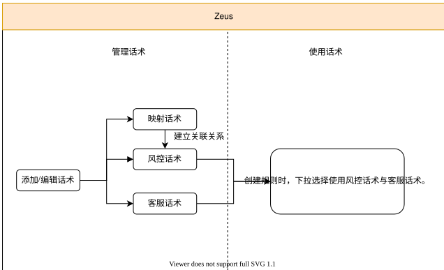
3.1 话术的增删改查
（1）风控话术
|
入口 |
页面说明 |
页面 |
|---|---|---|
|
配置中心-->话术管理-风控话术tab |
1.页面展示信息：按三类话术分为三个tab，每个tab下有一个话术列表（包含分页器，10条/页），支持按不同字段排序。 2.操作按钮 （1）筛选/查询：支持话术内容（模糊查询）、话术ID（模糊查询）、关联映射话术ID、最后修改/创建者misID、创建/修改时间（模糊查询） （2）【新增话术】：出现弹窗，默认类型为【风控话术】，提交时校验内容不为空。 （3）【编辑】：按钮入口在鼠标hover到话术内容上，点击icon出现二次确认弹窗，确认后进入编辑态，可编辑话术内容； （4）【删除】包含二次确认弹窗
（5）【被引用量】：点击出弹窗，可查看被哪些规则使用。点击规则名称可跳转到规则详情页。 （6）【关联映射话术ID】：点击跳转到关联的映射话术详情页。 |
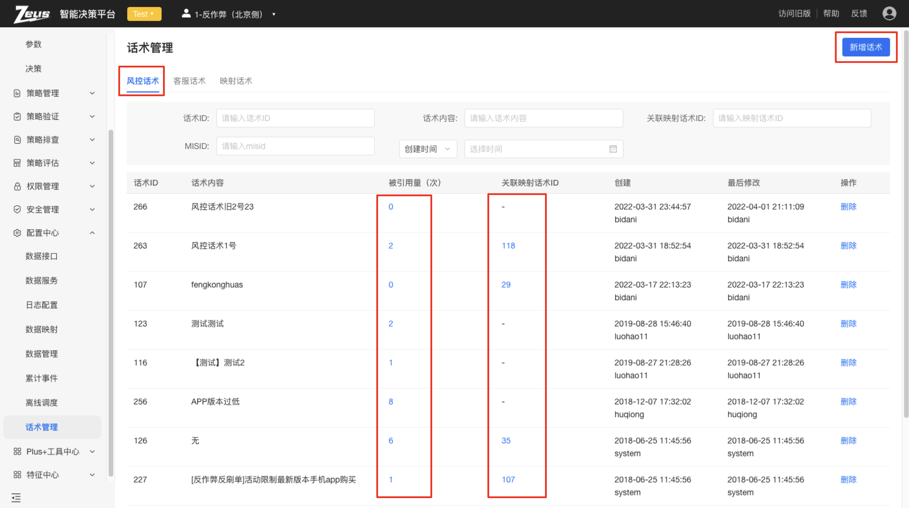 新增话术 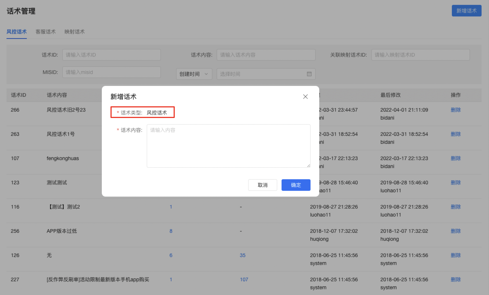 编辑话术 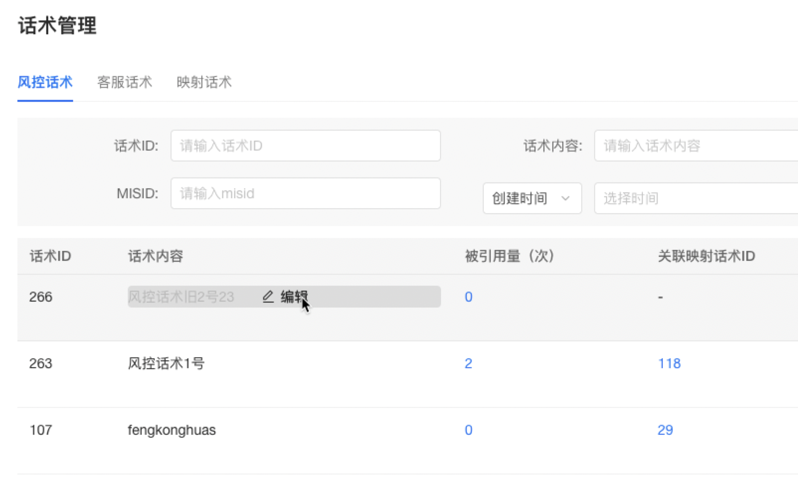 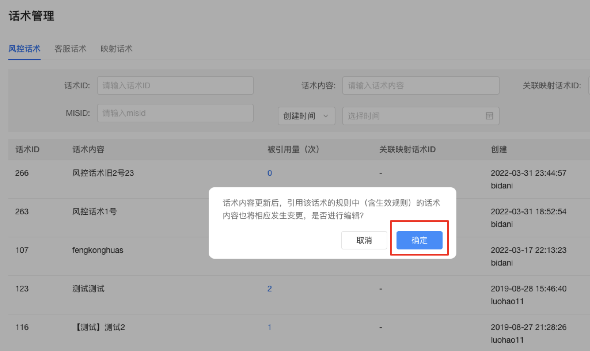 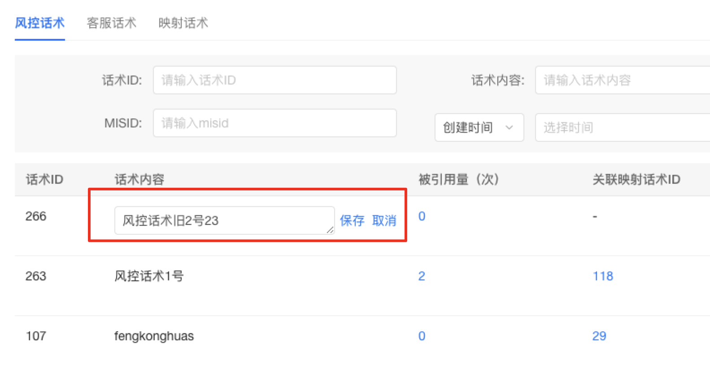 删除话术 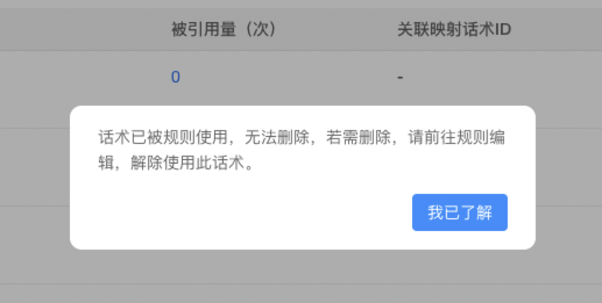 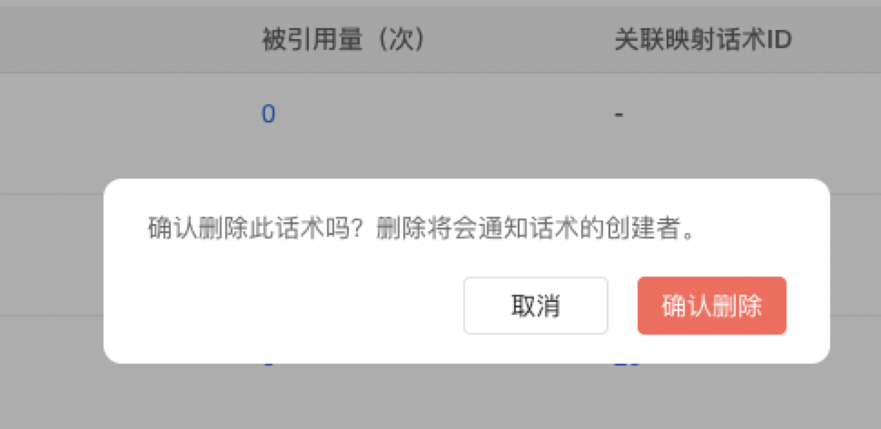 查看引用 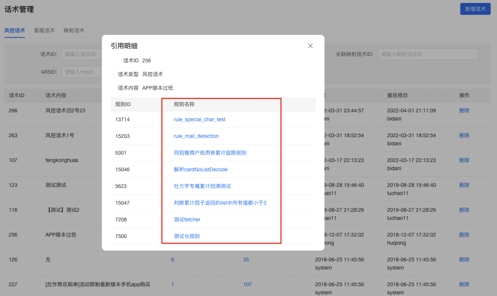 |
（2）客服话术
|
入口 |
页面说明 |
页面 |
|---|---|---|
|
配置中心-->话术管理-客服话术tab |
1.页面展示信息：按三类话术分为三个tab，每个tab下有一个话术列表（包含分页器，10条/页），支持按不同字段排序。 2.操作按钮 （1）筛选/查询：支持话术内容（模糊查询）、话术ID（模糊查询）、最后修改/创建者misID、创建/修改时间（模糊查询） （2）【新增话术】：出现弹窗，默认类型为【客服话术】，提交时校验内容不为空。 （3）【编辑】：按钮入口在鼠标hover到话术内容上，点击icon出现二次确认弹窗，确认后进入编辑态，可编辑话术内容； （4）【删除】包含二次确认弹窗
（5）【被引用量】：点击出弹窗，可查看被哪些规则使用。点击规则名称可跳转到规则详情页。 |
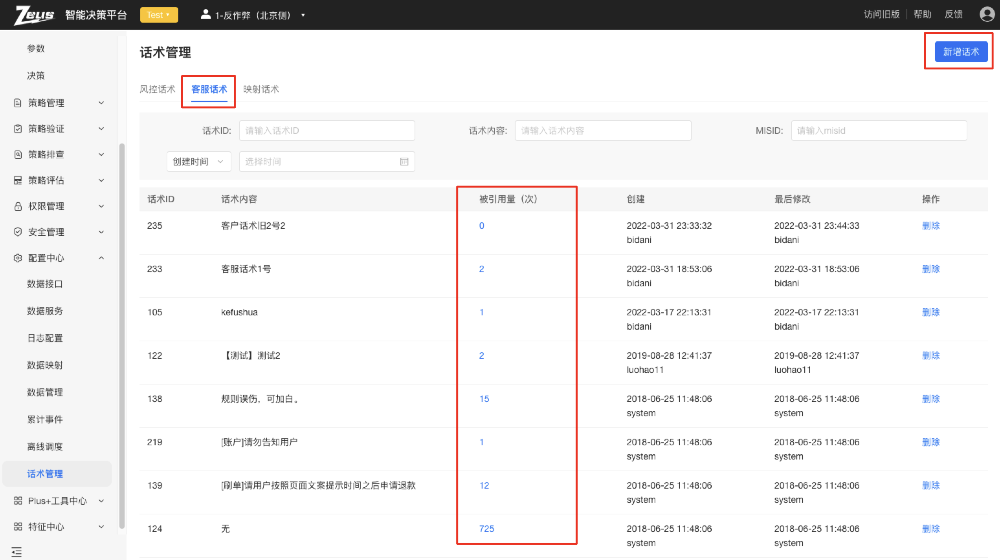 新增话术 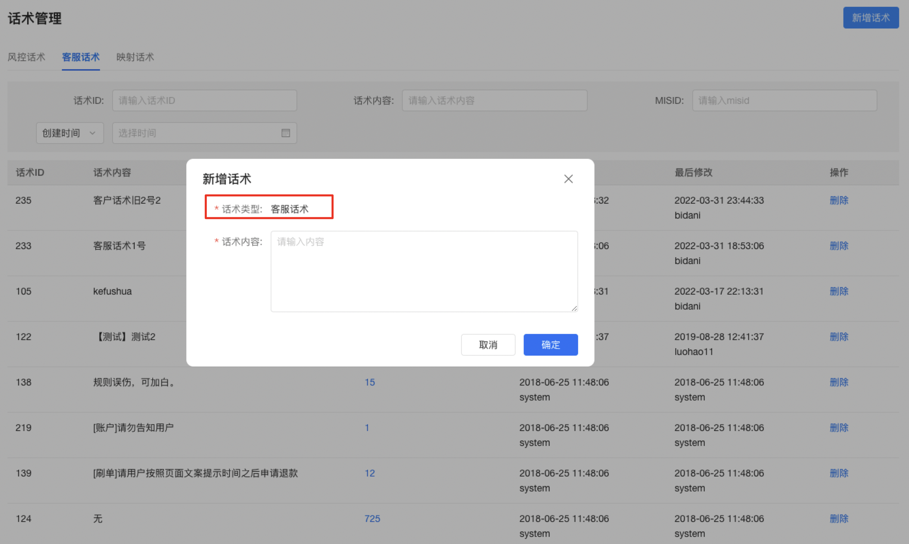 编辑话术（同风控话术） 删除话术（同风控话术） 查看引用（同风控话术） |
（3）映射话术
|
入口 |
页面说明 |
页面 |
|---|---|---|
|
配置中心-->话术管理-映射话术tab |
1.页面展示信息：按三类话术分为三个tab，每个tab下有一个话术列表（包含分页器，10条/页），支持按不同字段排序。 2.操作按钮 （1）筛选/查询：支持话术内容（模糊查询）、话术ID（模糊查询）、最后修改/创建者misID、创建/修改时间（模糊查询） （2）【新增话术】：进入新页面，默认类型为【映射话术】，下方关联风控话术的添加方式为「点击新增按钮，出现一行内容，输入框输入内容下拉选择，展示当前该空间下的风控话术ID+内容，点击选中一条后内容被添加到框中，再点保存即完成添加，在下方生成一条记录。列表点击删除关联即删去此风控话术的关联。新增关联风控话术，点击保存时，如果该风控话术已关联过其他映射，则保存失败，提示「无法配置，该风控话术已绑定其他映射话术。」。 （3）【详情】：点击后出现话术详情弹窗，内容为话术ID、类型（映射话术）、内容以及关联风控话术的列表。点击按钮【编辑】，出现弹窗确认，确认后进入编辑态，也可通过进入外部的话术列表的【编辑】直接进入编辑态； （4）【编辑】：点击后出现确认弹窗，文案「话术内容/关联关系更新后，引用该话术的规则中（含生效规则）的话术内容也将相应发生变更。是否进行编辑？」确认后进入编辑页面，内容逻辑同新增弹窗，仅多展示一项该映射话术的ID，点击【确认修改】时，完成修改； （5）【删除】包含二次确认弹窗
（6）【被引用量】：值含义为该映射话术关联的风控话术，各自被规则使用量的总和。点击出弹窗，展示该映射话术的ID、类型、内容。以及可查看被哪些风控话术关联，对应的被哪些规则使用。规则名称点击可跳转到规则详情页。 |
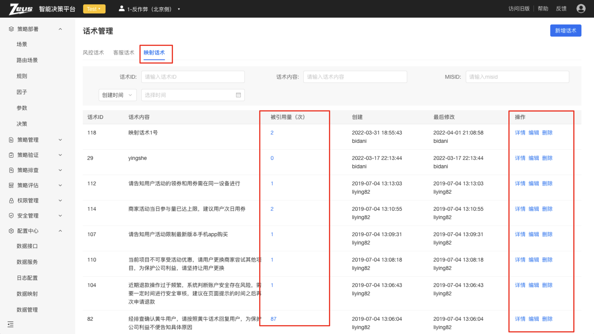 新增话术 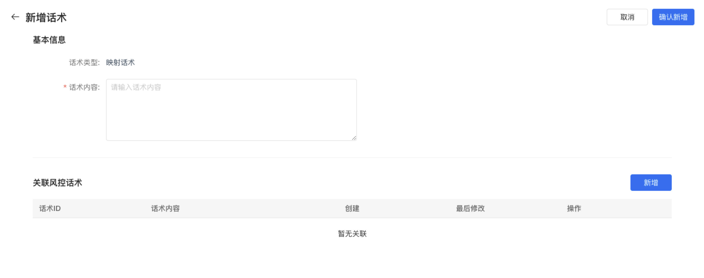 编辑话术 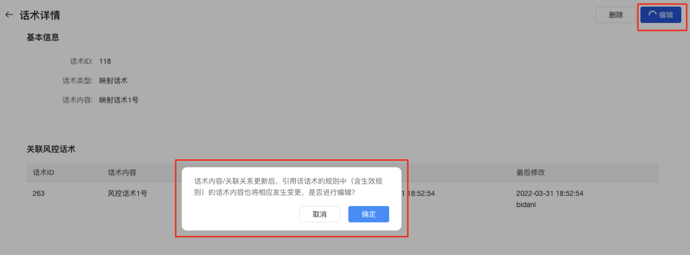 删除话术
查看引用 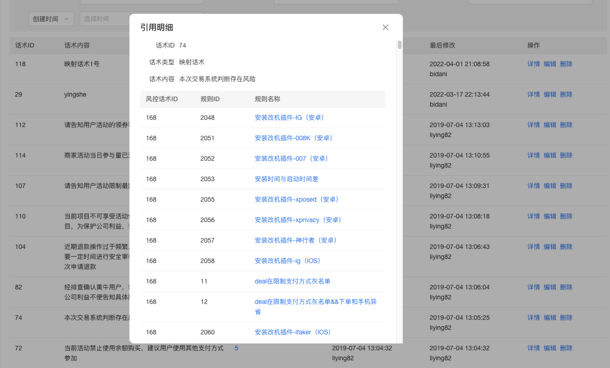 |


3.2 在规则中使用话术
本部分 与之前功能保持一致，但在话术下拉框中，将仅展示本空间下的话术选项。
（1）新建规则
新建规则时，进入添加规则属性信息页面，在此页面的最后一项 添加话术 处，在风控话术后面的选择框中选择创建的风控话术（原skywalker中的客服备注），在客服话术后面的选择框中选择创建的客服话术（原skywalker中的客服建议），点击 完成，就完成了在创建规则的过程中添加话术和客服备注；
（2）编辑规则
同添加规则入口一样，进入规则编辑页面，即可按照上述流程对规则进行修改。不需要修改规则的逻辑信息和测试，直接点击 下一步 跳到 规则的 属性信息 修改页面，在此页面的最后一项 添加话术 处，在风控话术后面的选择框中选择创建的风控话术（原skywalker中的客服备注），在客服话术后面的选择框中选择创建的客服话术（原skywalker中的客服建议），点击 完成，就完成了在修改规则的过程中添加话术和客服备注；
四、FAQ
|
问题 |
回答 |
备注 |
|
|---|---|---|---|
|
话术按照空间隔离，但规则可以跨空间共享。那规则共享到新空间后，其配置的话术将会如何？ |
规则共享到新空间，其在原空间携带的话术不会一同共享，而是需要用户在新空间为该规则选择新空间下的话术。如果需要和旧空间的话术内容保持一致，只能选择手动新增一条话术，为其配上。 |